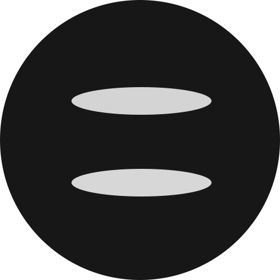

- First Day
Day 1 【国内-罗马】
抵达罗马 → 4星级的 贝斯特韦斯特皇家圣缇纳大酒店(Best Western Premier Hotel Royal Santina) 入住，整顿休息 → 自由安排>
- Second Day
Day 2【感受 “永恒之城”的魅力】
当地时间8点酒店早餐 → 罗马斗兽场 → 午餐：Enoteca Provincia Romana餐厅 → 前往因《罗马假日》而风靡世界的真理之口 → 回贝斯特韦斯特皇家圣缇纳大酒店 → 自由安排时间
- Third Day
Day 3【最神圣、最庄严】
当地时间8点酒店早餐 → 参观君士坦丁凯旋门 → 午餐:Enoteca Provincia Romana → 威尼斯广场 → 参观卡比托利欧博物馆 → 回贝斯特韦斯特皇家圣缇纳大酒店 → 自由安排时间
- Fourth Day
Day 4 【最热门、最迷人】
当地时间8点酒店早餐 → 参观圣天使城堡→ 午餐：Enoteca Provincia Romana餐厅 → 前往 西班牙广场 → 晚餐：Vito's Roma → 回贝斯特韦斯特皇家圣缇纳大酒店 → 自由安排时间
- Fifth Day
Day 5 【暴走的一日】
当地时间8点酒店早餐 → 参观圣天使城堡→ 午餐：AI 34餐厅 → 前往纳沃纳广场 → 晚餐：Bar Tre Scalini → 回贝斯特韦斯特皇家圣缇纳大酒店 → 自由安排时间